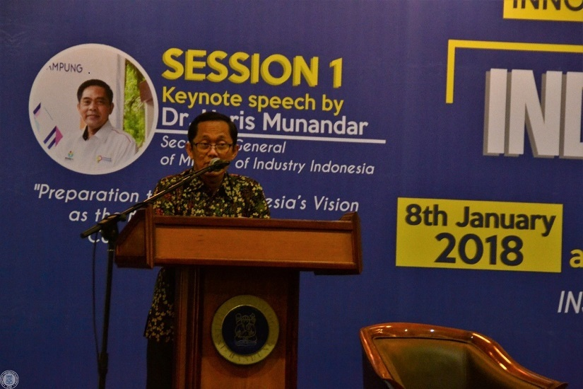
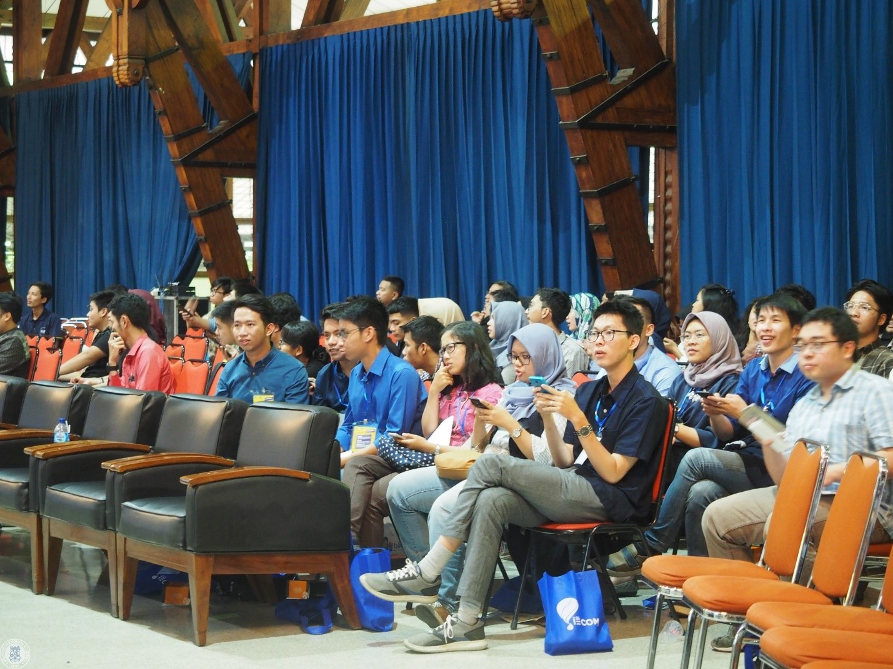
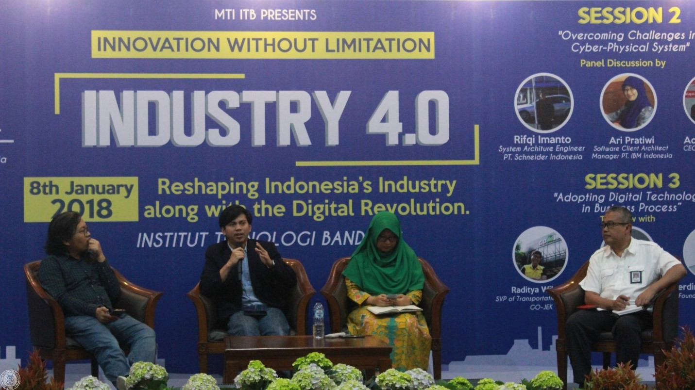

IECOM 2018: Pionir Indonesia dalam Kompetisi Teknik Industri Level Internasional
Bandung, itb.ac.id – Menjadi pionir dalam pembangunan negeri merupakan hal besar yang dapat dilakukan ITB. Begitu juga dalam dunia perindustrian. ITB merupakan penggagas disiplin ilmu teknik industri di Indonesia. Tak hanya berhenti dengan itu, ITB melalui Mahasiswa Teknik Industri mengadakan kompetisi teknik industri terbesar di Indonesia dengan level internasional yang bernama Industrial Engineering Competition (IECOM) 2018. Kegiatan ini terdiri dari kompetisi yang diikuti 15 tim dan grand seminar. Grand seminar diadakan pada hari Senin (8/01/18) di Aula Timur ITB.

Dalam grand seminar tersebut terdapat pemaparan topik "Preparation towards Indonesia's Vision as The Biggest Digital Economy Country in ASEAN by 2020" oleh Haris Munandar (Sekjen Kementerian Perindustrian Indonesia) dan dilanjutkan diskusi panel dengan topik "Overcoming Challenges in Cyber-Physical System" yang melibatkan Achmad Zaky (Teknik Informatika 2004) CEO Bukalapak.com, Rifqi Imanto (System Architecture Engineer PT. Schneider Indonesia), dan Ari Pratiwi (Software Client Manager PT. IBM Indonesia). Sesi ke 3 seminar ini berisi talkshow dengan topik "Adopting Digital Technology in Business Process" dari Lisa Widodo (SVP Product Manager Blibli.com), Raditya Wibowo (SVP Transportation Products Go-jek Indonesia) dan Ferdinan Hasiholan (Founder LaniusX SSCX Indonesia Indonesia).

Industrial Engineering Competition (IECOM) 2018 adalah ajang kompetisi internasioal 2 tahunan yang diadakan oleh Mahasiswa Teknik Industri (MTI) ITB. Kompetisi kali ini terdiri dari tiga tahap yaitu, pre-liminary, semifinal, dan grand final. Yang menarik dari tahun ini, selain tema yang baru yaitu, “Industry 4.0”, terdapat beberapa mata acara baru seperti appreciation night, award, company visit, dan sesi sharing.
“Teknik industri pertama kali di Indonesia diajarkan ITB, semenjak saat itu kami sudah dilatih menjadi pionir-pionir industri. Maka dari itu kami mencoba mengembangkan wawasan agar dapat memajukan Indonesia dan dunia. Dengan kompetisi ini, diharapkan dapat lebih mengenal kondisi perindustrian di berbagai negara terutama negara peserta kompetisi,” tutur Davin (Teknik Industri 2015) sebagai Ketua Pelaksana.
>
Kompetisi yang digelar ini dikemas dengan nilai innovative dan problem solving. Di samping itu, antusiasme peserta dalam ajang ini selalu tinggi dari waktu ke waktu. Hal ini karena IECOM merupakan kompetisi yang populer dan pertama kali terutama di Indonesia, penghargaannya pun menarik, sehingga semakin prestisius. Mendatang, IECOM ingin mengekpansi lebih luas dan kolaborasi dengan relasi internasional.
“Harapan kami sebenarnya pertama-tama buat indo bisa menginspirasi dari acara kami ini supaya pertama dari segi konten yang hangat yaitu “Industry 4.0” menambah wawasan kita semua dan mengantisipasi fenomena ini sekaligus menginspirasi dan meningkatkan kemampuan dan kecakapan mahasiswa teknik industri se-Indonesia. Salah satu harapan lain dari IECOM adalah semangat entrepreneur bagi peserta panitia melalui nilai innovative dan problem solving. Saya percaya bahwa iecom kali ini pastinya berbeda dengan sebelumnya. Semoga IECOM dapat menjadi petualangan sehingga dapat menjadi kenangan baik bagi peserta maupun panitia,” tutup Davin.